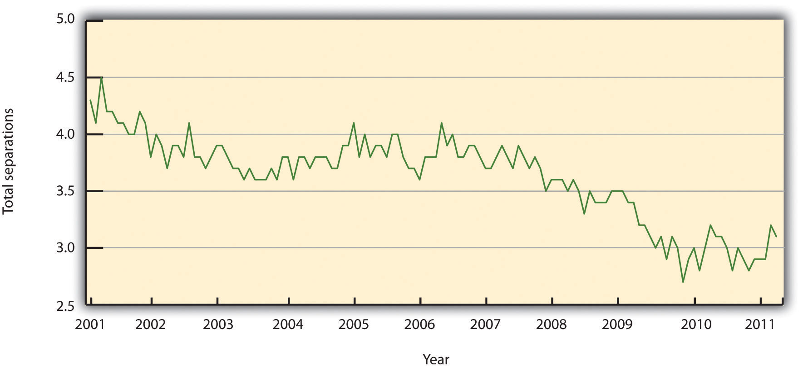

According to the book Keeping the People Who Keep You in Business by Leigh Branham,Leigh Branham, Keeping the People Who Keep You in Business (New York: American Management Association, 2000), 6. the cost of losing an employee can range from 25 percent to 200 percent of that employee’s salary. Some of the costs cited revolve around customer service disruption and loss of morale among other employees, burnout of other employees, and the costs of hiring someone new. Losing an employee is called turnoverReplacement of employees who are fired or quit. The term is normally expressed as a percentage: the ratio of the number of workers who had to be replaced in a given period to the average number of workers at the organization..
There are two types of turnover, voluntary turnover and involuntary turnover. Voluntary turnoverThe type of turnover that is initiated by the employee for many different reasons. is the type of turnover that is initiated by the employee for many different reasons. Voluntary turnover can be somewhat predicted and addressed in HR, the focus of this chapter. Involuntary turnoverTurnover in which the employee has no choice in his or her termination—for example, employer-initiated due to nonperformance. is where the employee has no choice in their termination—for example, employer-initiated due to nonperformance. This is discussed further in Chapter 9 "Successful Employee Communication".
It has been suggested that replacement of an employee who is paid $8 per hour can range upwards of $4,000.Noel Paiement “It Will Cost You $4,000 to Replace Just One $8 per Hour Employee,” Charity Village, July 13, 2009, accessed August 30, 2011, http://www.charityvillage.com/cv/research/rhr50.html. Turnover can be calculated by
separations during the time period (month)/total number of employees midmonth × 100 = the percentage of turnover.
For example, let’s assume there were three separations during the month of August and 115 employees midmonth. We can calculate turnover in this scenario by
3/115 × 100 = 2.6% turnover rate.
This gives us the overall turnover rate for our organization. We may want to calculate turnover rates based on region or department to gather more specific data. For example, let’s say of the three separations, two were in the accounting department. We have ten people in the accounting department. We can calculate that by
accounting: 2/10 × 100 = 20% turnover rate.The turnover rate in accounting is alarmingly high compared to our company turnover rate. There may be something happening in this department to cause unusual turnover. Some of the possible reasons are discussed in Section 7.1.1 "Reasons for Voluntary Turnover".
Figure 7.1 United States Yearly Turnover Statistics, 2001–11
Source: Data from Bureau of Labor Statistics, “Job Openings and Labor Turnover Survey,” accessed August 11, 2011, http://www.bls.gov/jlt/#data.
In HR, we can separate the costs associated with turnover into indirect costs and direct costs. Direct turnover costsIncludes the cost of leaving, replacement costs, and transition costs. include the cost of leaving, replacement costs, and transition costs, while indirect turnover costsIncludes the loss of production and reduced performance. include the loss of production and reduced performance. The following are some examples of turnover costs:Carl. P. Maertz, Jr. and M. A. Campion, “25 Years of Voluntary Turnover Research: A Review and Critique,” in International Review of Industrial and Organizational Psychology, vol. 13, ed. Cary L. Cooper and Ivan T. Robertson (London: John Wiley, 1998), 49–86.
To avoid these costs, development of retention plans is an important function of the HR strategic plan. Retention plansA plan that outlines the strategies the organization will use to reduce turnover and address employee motivation. outline the strategies the organization will use to reduce turnover and address employee motivation.
Table 7.1 Turnover Costs
| Direct | Indirect |
|---|---|
| Recruitment costs | Lost knowledge |
| Advertising costs for new position | Loss of productivity while new employee is brought up to speed |
| Orientation and training of new employee | Cost associated with lack of motivation prior to leaving |
| Severance costs | Cost associated with loss of trade secrets |
| Testing costs | |
| Time to interview new replacements | |
| Time to recruit and train new hires |
This video provides an excellent illustration of how to measure the cost of employee turnover in the hospitality industry.
Before we discuss specific details on retention planning, it is important to address the reasons why people choose to leave an organization to begin with. One mistake HR professionals and managers make is to assume people leave solely on the basis of their unhappiness with their compensation packages. Many factors can cause demotivated employees, which we discuss in Section 7.2.1 "Theories on Job Dissatisfaction".
Once we find out what can cause voluntary turnover, we can develop retention strategies to reduce turnover. Some of the common reasons employees leave organizations can include the following:
We know that some people will move or perhaps their family situation changes. This type of turnover is normal and expected. Figure 7.2 "Common Reasons for Employee Turnover" shows other examples of why people leave organizations.
Figure 7.2 Common Reasons for Employee Turnover

As HR professionals and managers, we want to be sure we have plans in place to keep our best people. One such plan is the retention plan, which we will discuss in Section 7.2 "Retention Plans".
Do you feel your current or past organization did a good job of reducing turnover? Why or why not?